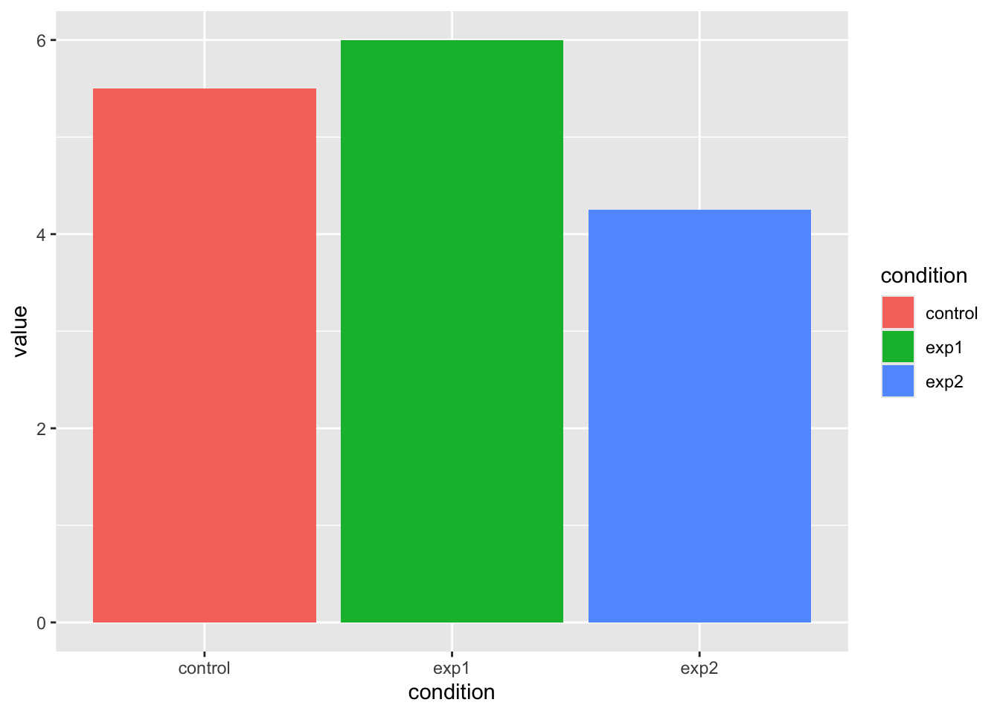

source("https://riseki.cloudfree.jp/?plugin=attach&refer=ANOVA%E5%90%9B&openfile=anovakun_489.txt")Chapter 22伴走Rmdファイル
分散分析用の関数を読み込もう
Betweenデザインの分析
データフレームを組み上げる
Example1 <- data.frame(
id = rep(1:4, 3),
condition = rep(1:3, each = 4),
value = c(6, 6, 5, 5, 7, 4, 7, 6, 4, 3, 4, 6)
)Factor型にする
Example1$condition <- factor(Example1$condition,
labels = c("control", "exp1", "exp2")
)データの中身を確認しておきましょう。
Example1 id condition value
1 1 control 6
2 2 control 6
3 3 control 5
4 4 control 5
5 1 exp1 7
6 2 exp1 4
7 3 exp1 7
8 4 exp1 6
9 1 exp2 4
10 2 exp2 3
11 3 exp2 4
12 4 exp2 6線形モデルとして分析する
result.lm1 <- lm(value ~ condition, data = Example1)
summary(result.lm1)
Call:
lm(formula = value ~ condition, data = Example1)
Residuals:
Min 1Q Median 3Q Max
-2.000 -0.500 -0.125 0.625 1.750
Coefficients:
Estimate Std. Error t value Pr(>|t|)
(Intercept) 5.5000 0.5713 9.627 4.91e-06 ***
conditionexp1 0.5000 0.8079 0.619 0.551
conditionexp2 -1.2500 0.8079 -1.547 0.156
---
Signif. codes: 0 '***' 0.001 '**' 0.01 '*' 0.05 '.' 0.1 ' ' 1
Residual standard error: 1.143 on 9 degrees of freedom
Multiple R-squared: 0.3562, Adjusted R-squared: 0.2131
F-statistic: 2.489 on 2 and 9 DF, p-value: 0.1379図を見ると明らかです。
library(ggplot2)
ggplot(Example1) +
aes(x = condition, y = value, fill = condition) +
stat_summary(geom = "bar", fun = "mean")
デフォルトの関数でもこういう結果が出せますよ
anova(result.lm1)Analysis of Variance Table
Response: value
Df Sum Sq Mean Sq F value Pr(>F)
condition 2 6.50 3.2500 2.4894 0.1379
Residuals 9 11.75 1.3056 Anovakunは親切設計
anovakun(Example1[, 2:3], "As", 3, eps = T)
[ As-Type Design ]
This output was generated by anovakun 4.8.9 under R version 4.5.3.
It was executed on Thu Apr 23 13:55:55 2026.
<< DESCRIPTIVE STATISTICS >>
--------------------------
A n Mean S.D.
--------------------------
a1 4 5.5000 0.5774
a2 4 6.0000 1.4142
a3 4 4.2500 1.2583
--------------------------
<< ANOVA TABLE >>
--------------------------------------------------------------
Source SS df MS F-ratio p-value epsilon^2
--------------------------------------------------------------
A 6.5000 2 3.2500 2.4894 0.1379 ns 0.2131
Error 11.7500 9 1.3056
--------------------------------------------------------------
Total 18.2500 11 1.6591
+p < .10, *p < .05, **p < .01, ***p < .001
output is over --------------------///二要因デザイン(Between)の場合
データの準備
ファクター型にして出力するところまでです。
Example2 <- data.frame(
id = 1:12,
num = rep(1:3, 4),
temp = rep(1:2, each = 6),
maker = rep(rep(1:2, each = 3), 2),
value = c(13, 11, 12, 7, 6, 8, 9, 9, 9, 13, 11, 9)
)
Example2$temp <- factor(Example2$temp,
labels = c("Hot", "Cold")
)
Example2$maker <- factor(Example2$maker,
label = c("A", "B")
)
Example2 id num temp maker value
1 1 1 Hot A 13
2 2 2 Hot A 11
3 3 3 Hot A 12
4 4 1 Hot B 7
5 5 2 Hot B 6
6 6 3 Hot B 8
7 7 1 Cold A 9
8 8 2 Cold A 9
9 9 3 Cold A 9
10 10 1 Cold B 13
11 11 2 Cold B 11
12 12 3 Cold B 9線形モデルとしての出力
result.lm2 <- lm(value ~ temp * maker, data = Example2)
summary(result.lm2)
Call:
lm(formula = value ~ temp * maker, data = Example2)
Residuals:
Min 1Q Median 3Q Max
-2.00 -0.25 0.00 0.25 2.00
Coefficients:
Estimate Std. Error t value Pr(>|t|)
(Intercept) 12.0000 0.7071 16.97 1.48e-07 ***
tempCold -3.0000 1.0000 -3.00 0.01707 *
makerB -5.0000 1.0000 -5.00 0.00105 **
tempCold:makerB 7.0000 1.4142 4.95 0.00112 **
---
Signif. codes: 0 '***' 0.001 '**' 0.01 '*' 0.05 '.' 0.1 ' ' 1
Residual standard error: 1.225 on 8 degrees of freedom
Multiple R-squared: 0.7867, Adjusted R-squared: 0.7067
F-statistic: 9.833 on 3 and 8 DF, p-value: 0.004641デフォルトの関数での出力
anova(result.lm2)Analysis of Variance Table
Response: value
Df Sum Sq Mean Sq F value Pr(>F)
temp 1 0.75 0.75 0.5 0.499576
maker 1 6.75 6.75 4.5 0.066688 .
temp:maker 1 36.75 36.75 24.5 0.001121 **
Residuals 8 12.00 1.50
---
Signif. codes: 0 '***' 0.001 '**' 0.01 '*' 0.05 '.' 0.1 ' ' 1Anovakunでの出力
anovakun(Example2[, 3:5], "ABs", 2, 2, eps = T)
[ ABs-Type Design ]
This output was generated by anovakun 4.8.9 under R version 4.5.3.
It was executed on Thu Apr 23 13:55:55 2026.
<< DESCRIPTIVE STATISTICS >>
-------------------------------
A B n Mean S.D.
-------------------------------
a1 b1 3 12.0000 1.0000
a1 b2 3 7.0000 1.0000
a2 b1 3 9.0000 0.0000
a2 b2 3 11.0000 2.0000
-------------------------------
<< ANOVA TABLE >>
---------------------------------------------------------------
Source SS df MS F-ratio p-value epsilon^2
---------------------------------------------------------------
A 0.7500 1 0.7500 0.5000 0.4996 ns -0.0133
B 6.7500 1 6.7500 4.5000 0.0667 + 0.0933
A x B 36.7500 1 36.7500 24.5000 0.0011 ** 0.6267
Error 12.0000 8 1.5000
---------------------------------------------------------------
Total 56.2500 11 5.1136
+p < .10, *p < .05, **p < .01, ***p < .001
<< POST ANALYSES >>
< SIMPLE EFFECTS for "A x B" INTERACTION >
---------------------------------------------------------------
Source SS df MS F-ratio p-value epsilon^2
---------------------------------------------------------------
A at b1 13.5000 1 13.5000 9.0000 0.0171 * 0.2133
A at b2 24.0000 1 24.0000 16.0000 0.0039 ** 0.4000
B at a1 37.5000 1 37.5000 25.0000 0.0011 ** 0.6400
B at a2 6.0000 1 6.0000 4.0000 0.0805 + 0.0800
Error 12.0000 8 1.5000
---------------------------------------------------------------
+p < .10, *p < .05, **p < .01, ***p < .001
output is over --------------------///Withinデザインの場合
データを作ります。できたものを確認しておきましょう。
Example3 <- data.frame(
ID = 1:4,
Time1 = c(10, 9, 4, 7),
Time2 = c(5, 4, 2, 3),
Time3 = c(9, 5, 3, 5)
)
Example3 ID Time1 Time2 Time3
1 1 10 5 9
2 2 9 4 5
3 3 4 2 3
4 4 7 3 5Anovakunで分析
結果の読み取り方が複雑ですから，授業をよく聞いておいてね。
anovakun(Example3[, 2:4], "sA", 3, eps = T)
[ sA-Type Design ]
This output was generated by anovakun 4.8.9 under R version 4.5.3.
It was executed on Thu Apr 23 13:55:55 2026.
<< DESCRIPTIVE STATISTICS >>
--------------------------
A n Mean S.D.
--------------------------
a1 4 7.5000 2.6458
a2 4 3.5000 1.2910
a3 4 5.5000 2.5166
--------------------------
<< SPHERICITY INDICES >>
== Mendoza's Multisample Sphericity Test and Epsilons ==
-------------------------------------------------------------------------
Effect Lambda approx.Chi df p LB GG HF CM
-------------------------------------------------------------------------
A 1.0000 -0.0000 2 1.0000 ns 0.5000 1.0000 3.0000 0.5000
-------------------------------------------------------------------------
LB = lower.bound, GG = Greenhouse-Geisser
HF = Huynh-Feldt-Lecoutre, CM = Chi-Muller
<< ANOVA TABLE >>
---------------------------------------------------------------
Source SS df MS F-ratio p-value epsilon^2
---------------------------------------------------------------
s 39.0000 3 13.0000
---------------------------------------------------------------
A 32.0000 2 16.0000 16.0000 0.0039 ** 0.3896
s x A 6.0000 6 1.0000
---------------------------------------------------------------
Total 77.0000 11 7.0000
+p < .10, *p < .05, **p < .01, ***p < .001
<< POST ANALYSES >>
< MULTIPLE COMPARISON for "A" >
== Shaffer's Modified Sequentially Rejective Bonferroni Procedure ==
== The factor < A > is analysed as dependent means. ==
== Alpha level is 0.05. ==
--------------------------
A n Mean S.D.
--------------------------
a1 4 7.5000 2.6458
a2 4 3.5000 1.2910
a3 4 5.5000 2.5166
--------------------------
----------------------------------------------------------
Pair Diff t-value df p adj.p
----------------------------------------------------------
a1-a2 4.0000 5.6569 3 0.0109 0.0328 a1 > a2 *
a1-a3 2.0000 2.8284 3 0.0663 0.0663 a1 = a3
a2-a3 -2.0000 2.8284 3 0.0663 0.0663 a2 = a3
----------------------------------------------------------
output is over --------------------///